很多人用 Claude Code 啥的写代码的时候，直接把需求丢给 AI 就让它写。
后来发现这种做法其实不太合理，AI 拿到需求就埋头写代码，缺少规划、缺少测试、缺少审查，产出质量时好时坏。
Superpowers 就是来解决这个问题的，120K 的 Star 足以说明问题了。
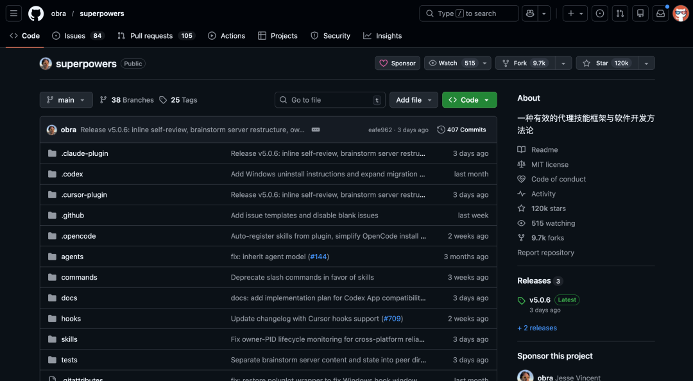
它把优秀工程师的工作方式：需求讨论、设计评审、测试驱动、代码审查、编码成了一套自动触发的 Skill。
AI 装上这些 SKill 后，拿到需求不会急着写代码，而是先停下来思考和规划。
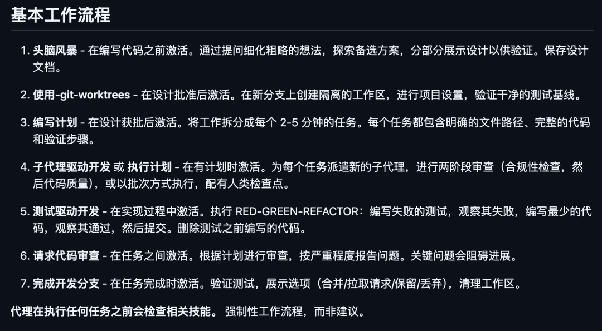
我自己几乎每天都在用，实际感受就是装了之后 AI 写代码的质量确实上了好几个台阶，尤其是开发新项目的时候。
如果你平时用 Claude Code、Cursor、Codex 这些工具 Coding，非常建议装一下 Superpowers。
开源地址：https://github.com/obra/superpowers和 Superpowers 类似，Everything Claude Code 也是让 AI 变得更专业的项目，不过路子不太一样。
两个月不到就拿到了 11 万 Star，涨得也非常猛。
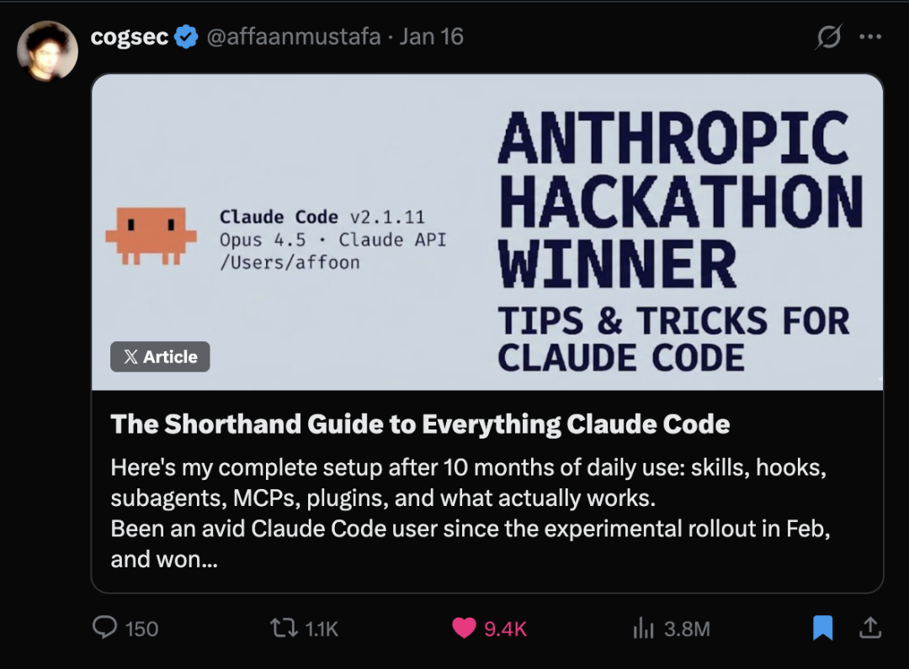
作者靠这个开源项目拿下了去年的 Anthropic 的黑客马拉松冠军。
它提供了 28 个专业 Agent、125 个 SKill 和 60 多个命令。
每个 Agent 有明确分工，有专门做架构设计的、做代码审查的、做安全漏洞分析的、做构建错误修复的。
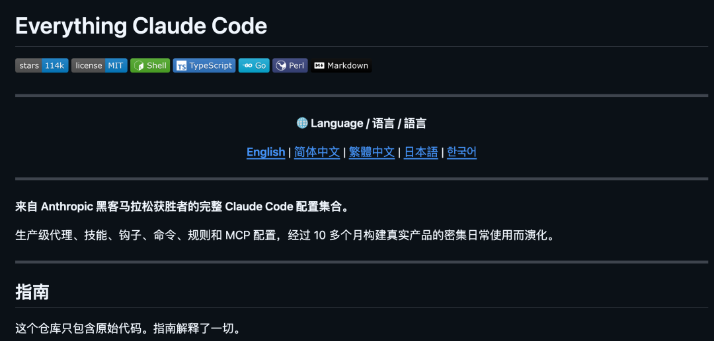
最有意思的是它的持续学习机制。
他可以从每次编程会话中自动提取模式和最佳实践，转化为可复用的知识和 SKill。用得越多，AI 就越懂你的习惯和项目风格。
一套配置同时支持 Claude Code、Codex、Cursor、OpenCode 等多个平台，不用担心换工具就得重新配。
开源地址：https://github.com/affaan-m/everything-claude-codeDeerFlow 是字节跳动开源的一个超级智能体运行框架，目前已经超过 5 万 Star。
前不久还登上了 GitHub Trending 第一名。
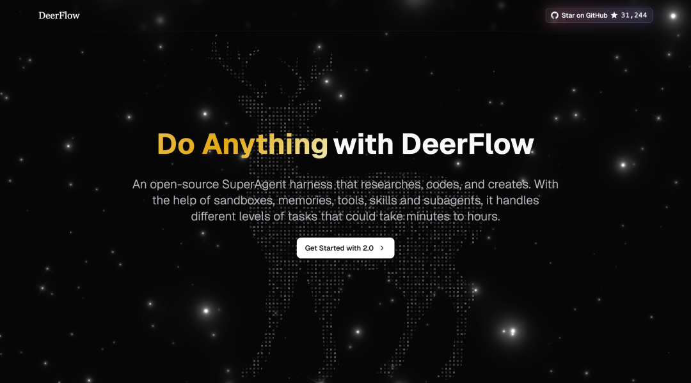
DeerFlow 2.0 从头重写了整个架构，现在它本质上是一个智能体运行时。
它让 AI Agent 有了自己的执行环境：沙盒里的文件系统，能真正读写文件、执行代码、生成产出物。
Lead Agent 可以动态生成子智能体，每个子智能体有独立的上下文和工具，还能并行执行。
内置了一堆实用 SKill：深度研究、报告生成、PPT 制作、网页构建、图表可视化、图片和视频生成等等。
还有长期记忆系统，跨会话记住你的偏好和知识。
支持 Telegram、Slack、飞书三大即时通讯平台接入。
说白了 DeerFlow 解决的核心问题就是让 AI 从只会聊天变成真正能干活。
开源地址：https://github.com/bytedance/deer-flowMiroFish 是一个基于多智能体的 AI 预测引擎。
口号是预测万物，目前 4.4 万 Star。
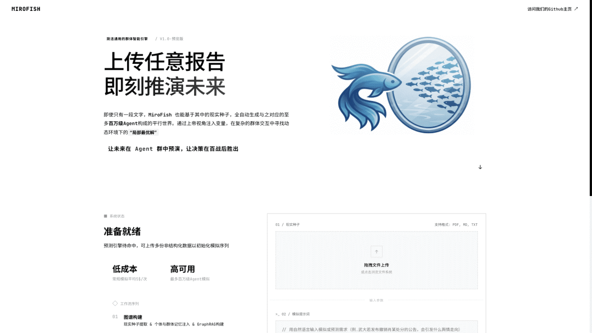
玩法挺有意思的。
你上传一些种子材：比如一条突发新闻、一份政策草案、一段小说文本，然后用自然语言告诉它你想预测什么。
系统会自动构建一个平行数字世界，里面有成千上万个具备独立人格和长期记忆的 AI 智能体。
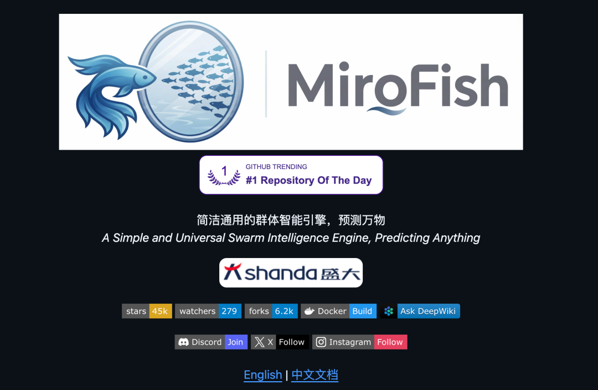
这些智能体自由交互、社会演化，你还能以上帝视角动态注入变量来推演不同的未来走向。
它已经有一些实际案例了，比如武汉大学舆情推演、红楼梦失传结局推演、金融方向推演等。
背后是盛大集团在支持孵化。
对于做舆情分析、政策推演、或者单纯对预测未来感兴趣的人来说，这个项目值得关注。
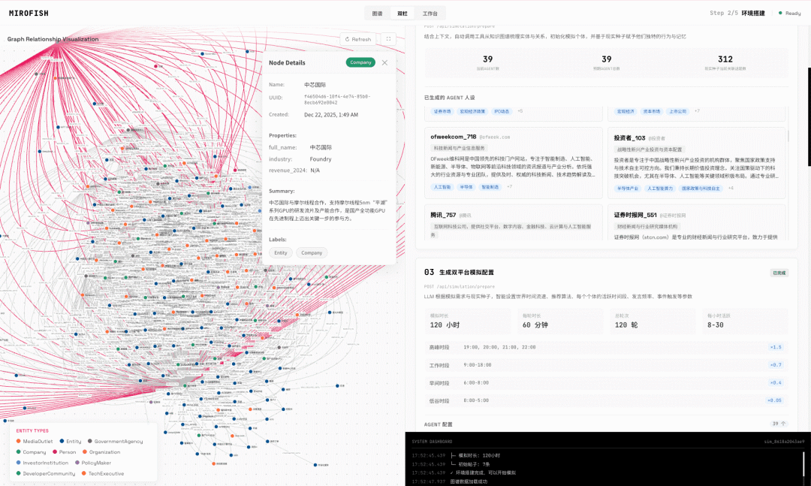
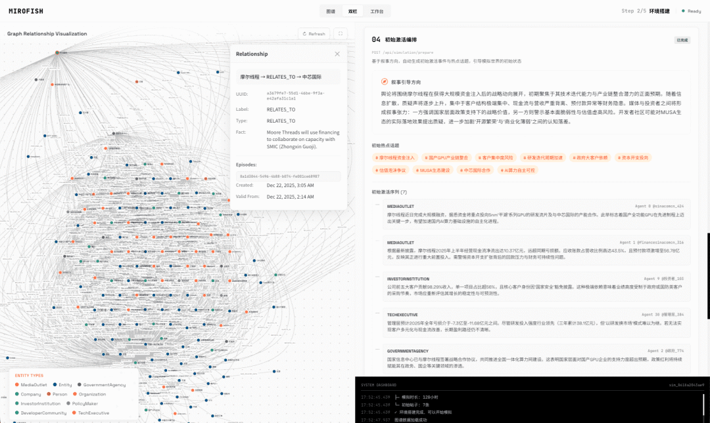
开源地址：https://github.com/666ghj/MiroFishRuView 这个项目让我眼前一亮。
它用普通的 WiFi 信号就能实现实时人体姿态估计、生命体征监测和存在检测。
完全不需要摄像头，目前 4.4 万 Star。
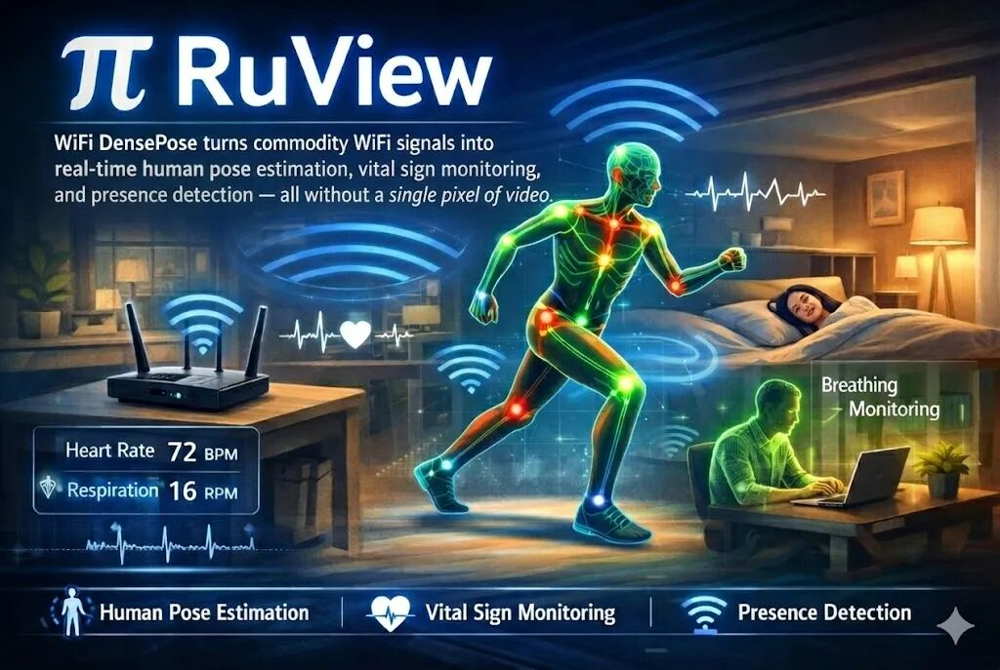
WiFi 路由器不断向房间发射无线电波，人移动甚至呼吸的时候，电波的散射模式会发生变化。
RuView 通过分析 WiFi 的信道状态信息来读取这些变化，从而重建人体的位置、呼吸频率和心率。
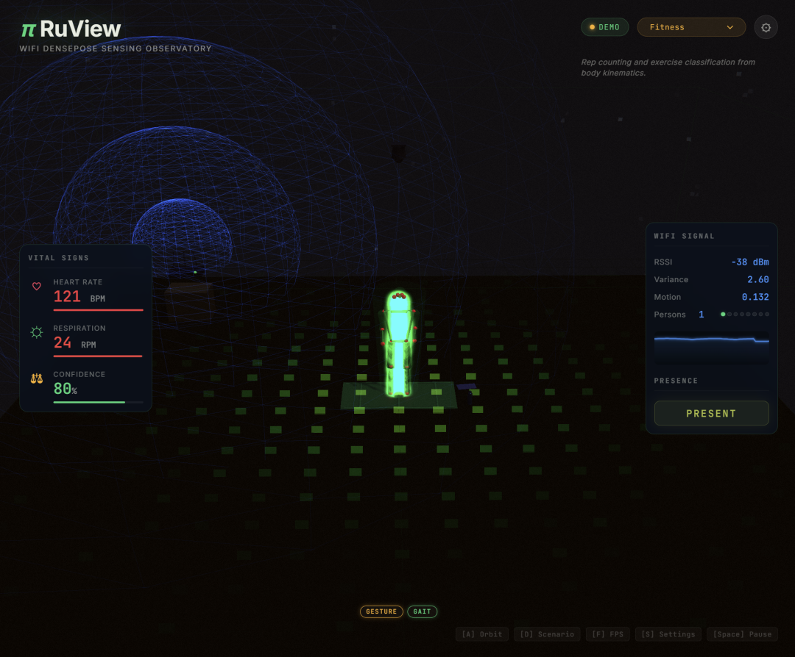
WiFi 信号还能穿透墙壁，所以它可以隔墙感知。
硬件成本极低，一个 8 美元的 ESP32-S3 微控制器就能跑。
不需要互联网连接，不需要云服务，所有数据完全在本地处理。
开源地址：https://github.com/ruvnet/RuViewLearn Claude Code 这个项目口号是 Bash is all you need。
目前 4.1 万 Star。
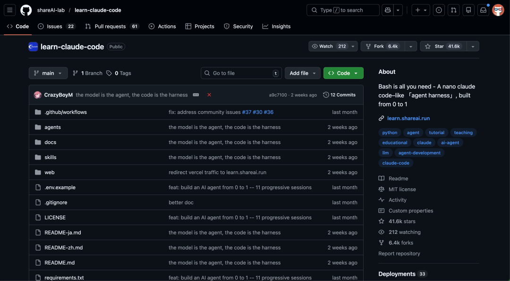
它是一个从零到一的教学项目，通过 12 个递进式课程教你如何为 AI Agent 构建运行环境。
Agent 的智能来自模型本身，不是什么框架或者提示链编排。
开发者要做的是构建好模型运行的外部世界：工具、知识、上下文、权限。
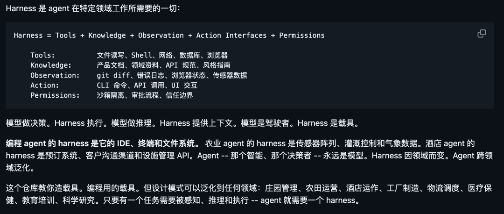
12 节课从最简单的一个 Agent Loop 开始。
逐步叠加工具调用、任务规划、子 Agent、技能加载、上下文压缩、后台任务、多 Agent 团队协作等机制。
它还有一个交互式学习网站 learn.shareai.run。
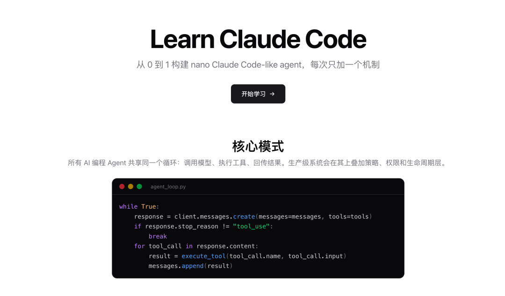
可以直接在浏览器里看到每节课的可视化演示、代码对比和架构图，体验挺不错的，推荐去看看。
如果你想知道 Claude Code 内部到底是怎么工作的，或者想自己构建一个编码 Agent，这个项目是最好的起点。
开源地址：https://github.com/shareAI-lab/learn-claude-codeProject AIRI 的目标是复刻 Neuro-sama：那个能玩游戏、能互动的 AI 虚拟主播。
目前快 3.6 万 Star。
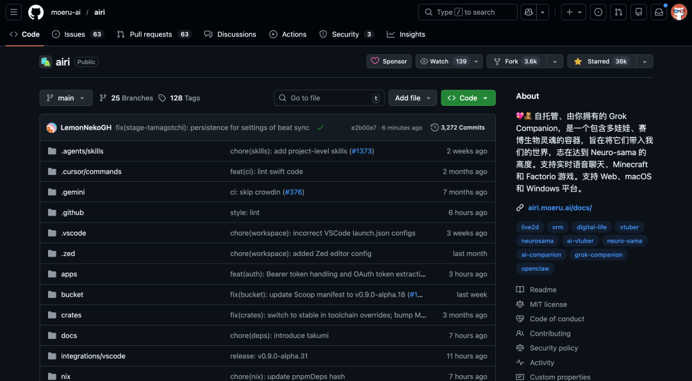
和 Character.ai 那种只能聊天的平台不同，AIRI 真的能让 AI 玩游戏。
目前已经能玩 Minecraft，Factorio 也验证过了。
除了玩游戏，它还支持实时语音对话、VRM 和 Live2D 虚拟形象、近 20 种主流 LLM 提供商。
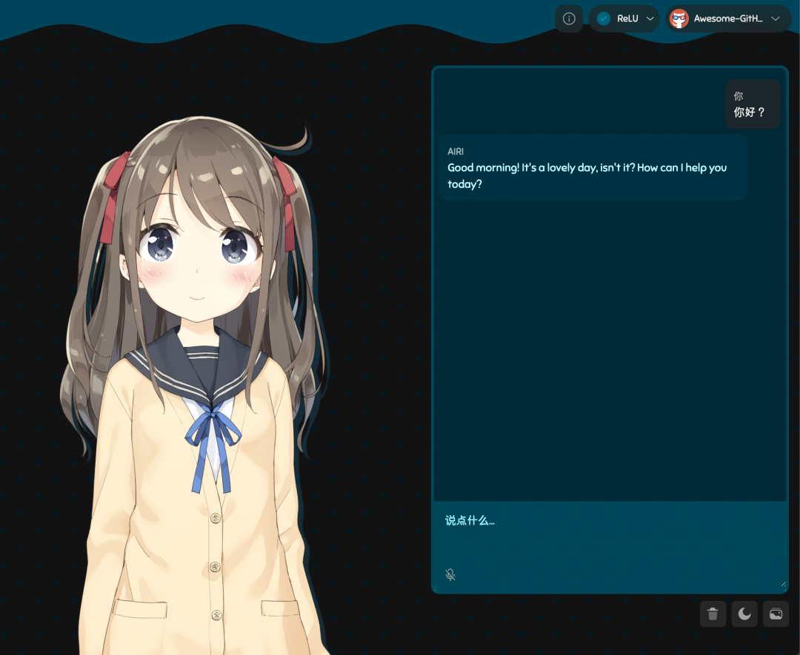
如果你想要一个属于自己的 AI 虚拟伙伴，不仅能聊天还能一起玩游戏，AIRI 值得一试。
开源地址：https://github.com/moeru-ai/airiScrapling 是一个自适应的 Python 爬虫框架，目前 3.3 万 Star。
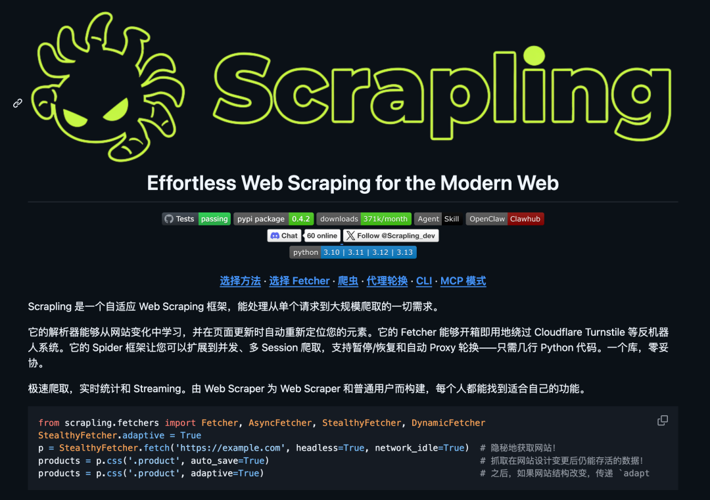
做爬虫最头疼的问题就是目标网站改版了，选择器全失效，得手动一个一个修。
Scrapling 的自适应解析器通过智能相似度算法自动重新定位目标元素，即使网站改了版面或者 CSS 类名变了也能找到。
这个功能确实解决了爬虫维护中最大的痛点。
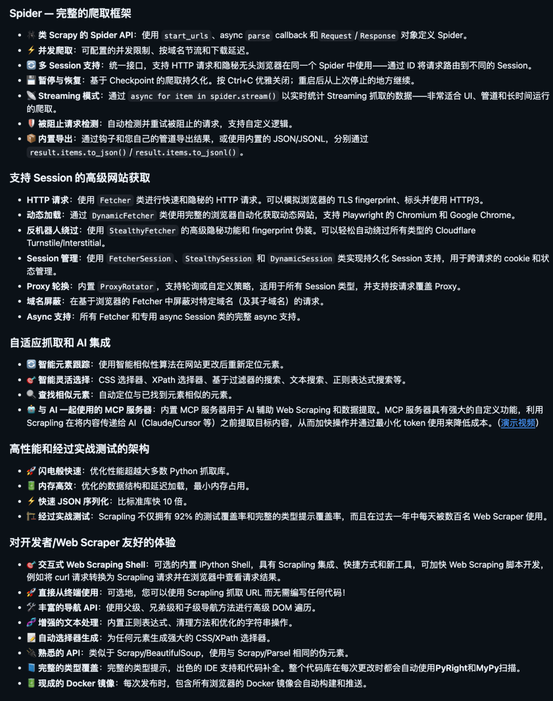
除了自适应追踪，它还开箱即用地支持绕过 Cloudflare Turnstile 等反机器人系统。
性能方面也很能打，解析速度和 Scrapy 持平，比 BeautifulSoup4 快将近 800 倍。从简单的单次请求到大规模并发爬取，统一用一套 API。
还提供了 MCP ，可以和 Claude、Cursor 这些 AI 工具集成，实现 AI 辅助抓取。
开源地址：https://github.com/D4Vinci/ScraplingLightpanda 是一个完全用 Zig 语言从零开始写的无头浏览器，2.5 万 Star。
为什么要从零写一个浏览器？
因为 Chrome 做无头自动化的时候资源消耗太大了。
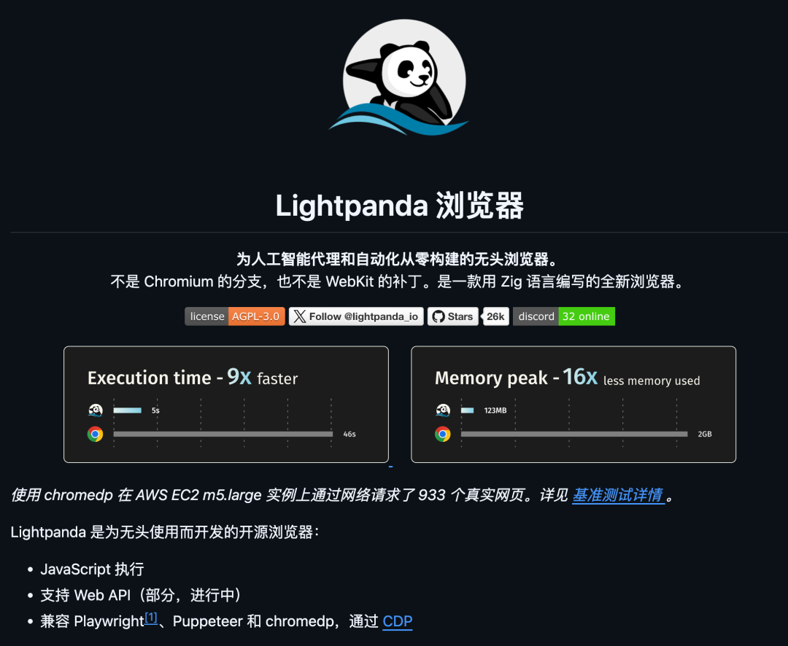
Lightpanda 的内存占用只有 Chrome 的九分之一，执行速度却快了 11 倍。
它兼容 CDP 协议，所以你用 Playwright、Puppeteer 这些工具写的脚本不用改就能迁移过来。
它不做图形渲染，去掉了所有桌面浏览器才需要的功能，只专注于在服务器端高效执行 JavaScript 和处理网页内容。
非常适合 AI Agent、LLM 训练数据采集、网页爬虫和自动化测试这些场景。
目前还在 Beta 阶段，不过迭代速度很快，基本一到两周就发一个新版本。
开源地址：https://github.com/lightpanda-io/browserClaude Code 最佳实践指南，目前2.2 万 Star。
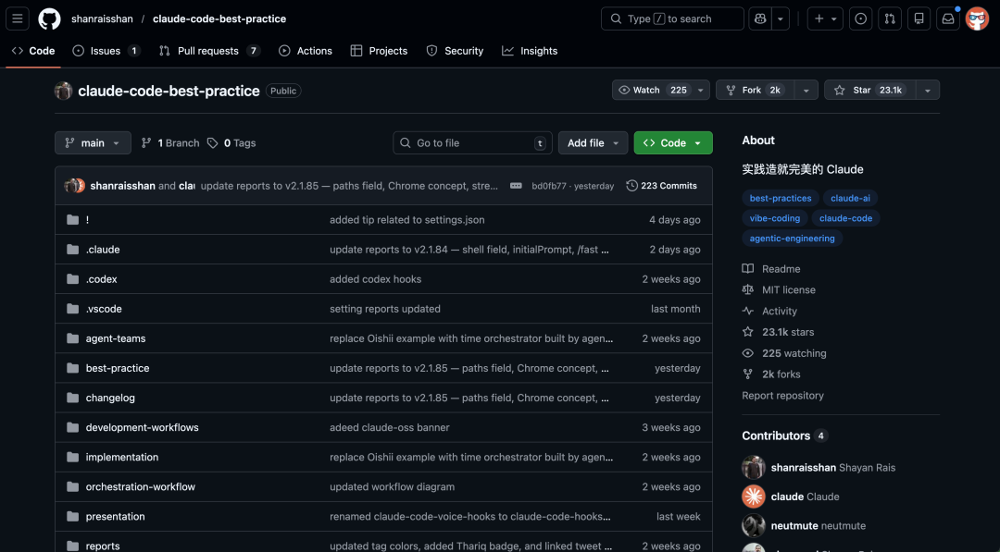
里面最值钱的是那 84 条实战技巧，直接来自 Claude Code 的创始人 Boris Cherny 和核心工程师们。
覆盖了 Prompting、规划、CLAUDE.md 编写、Skills 开发、Hooks 使用等 12 个类别，每条都标了来源和参考链接。
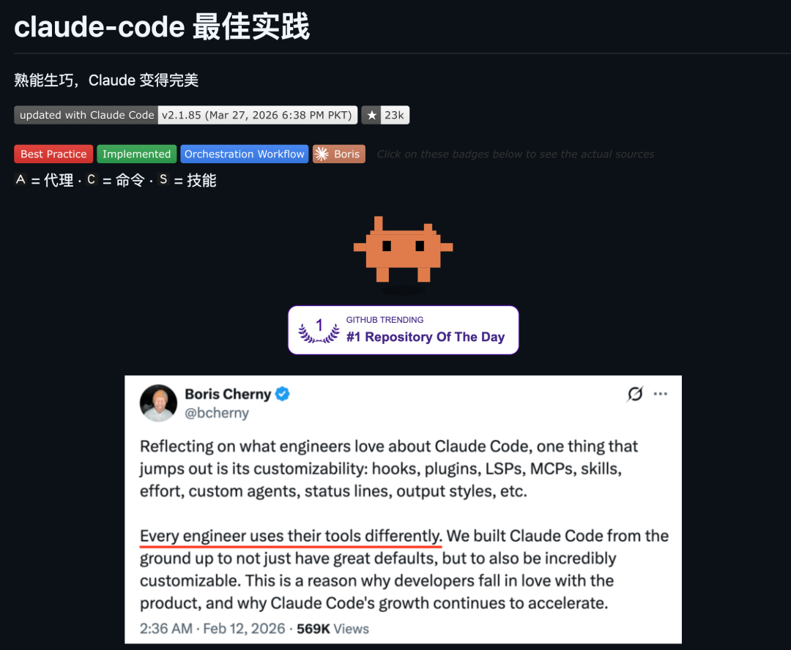
它还横向对比了 8 大主流 Claude Code 开发工作流框架，按 Star 数排序，列出了每个框架的独特性和组件数量。
如果你在纠结用 Superpowers 还是 Everything Claude Code 还是别的什么框架，看看这个对比就清楚了。
开源地址：https://github.com/shanraisshan/claude-code-best-practiceGitNexus 是一个零服务器代码智能引擎，它把你的代码仓库索引为知识图谱。
追踪每一个依赖关系、调用链和执行流程。
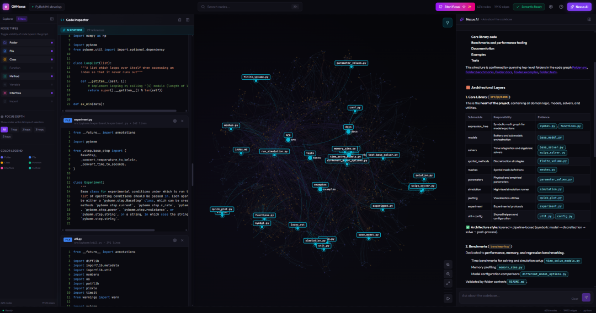
说白了就是给 AI 编程助手装上了架构地图。
以前 AI 修改一个函数，不知道有 47 个其他函数依赖它的返回类型，改了就出 bug。
GitNexus 在索引阶段就完成了聚类、追踪和评分，AI 一次查询就能拿到完整的上下文，不需要来来回回探索。
支持 14 种以上编程语言，有 CLI 和 Web UI 两种使用方式。
Web UI 完全在浏览器端运行，拖入 ZIP 文件就能生成交互式知识图谱，都不需要装任何东西。
开源地址：https://github.com/abhigyanpatwari/GitNexusOpenViking 是火山引擎推出的一个专门为 AI Agent 设计的上下文数据库，快 2 万 Star。
传统 RAG 系统的向量存储太碎片化了，记忆散落在各处。
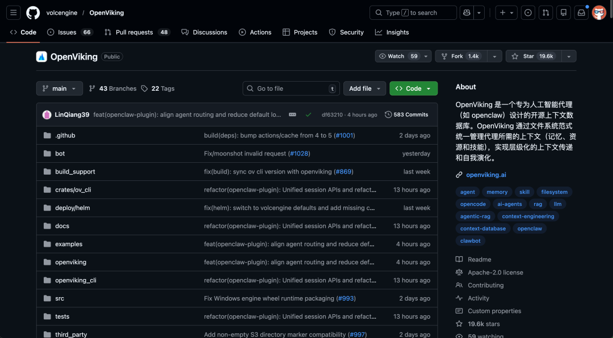
OpenViking 用文件系统范式来统一管理 Agent 的记忆、资源和技能。开发者可以像管理本地文件一样管理 Agent 的大脑。
它有个很聪明的设计是三级分层上下文加载，按需加载上下文，显著降低 Token 消耗。
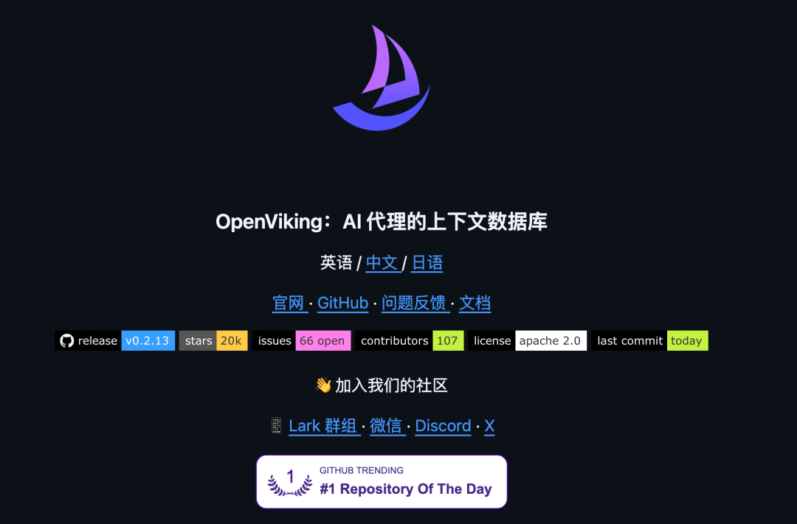
还有上下文自迭代功能，自动从会话中提取长期记忆，Agent 用得越多越聪明。
可视化检索轨迹让你能清楚看到 Agent 是怎么检索信息的，方便调试。
支持豆包、Claude、DeepSeek、Gemini、Ollama 等多种模型后端。
开源地址：https://github.com/volcengine/OpenVikingOpenSandbox 是阿里巴巴开源的面向 AI 应用的通用沙箱平台，近万 Star。
当 AI Agent 需要执行代码、操作文件、运行命令的时候，你不能让它直接在你机器上跑，太危险了。
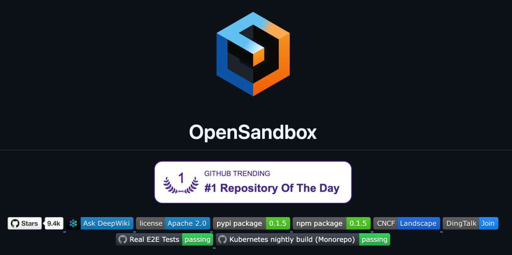
OpenSandbox 提供了一个安全隔离的运行环境，支持 gVisor、Kata Containers、Firecracker microVM 等安全容器运行时。
它预集成了 Claude Code、Gemini CLI、OpenAI Codex CLI 等主流编码 Agent。
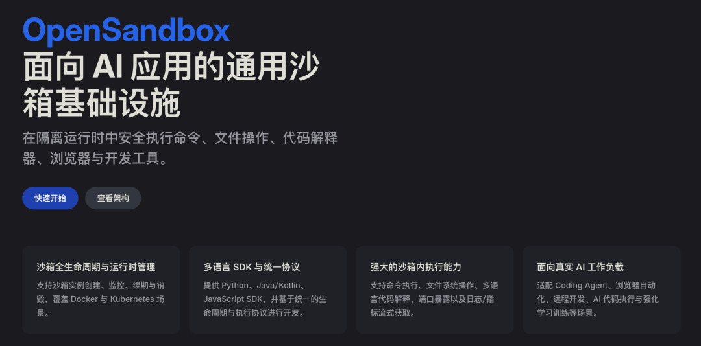
提供 Python、Java、JavaScript、C# 多语言 SDK。
本地 Docker 跑或者上 Kubernetes 大规模调度都行。
项目刚入选了 CNCF Landscape，定位是云原生 AI 基础设施。
开源地址：https://github.com/alibaba/OpenSandbox14
点击下方卡片，关注逛逛 GitHub
这个公众号历史发布过很多有趣的开源项目，如果你懒得翻文章一个个找，你直接关注微信公众号：逛逛 GitHub ，后台对话聊天就行了：